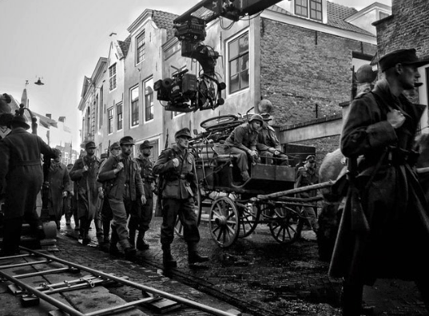
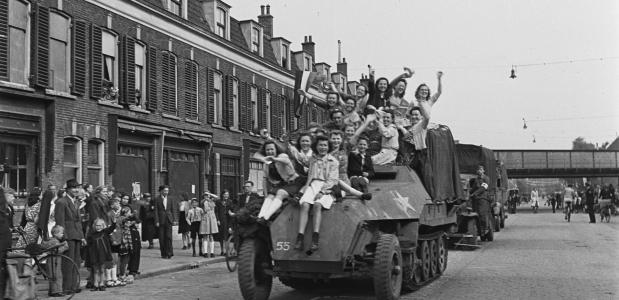

De Tweede Wereldoorlog

Samenvatting de Tweede Wereldoorlog
De Tweede Wereldoorlog was de escalatie van een Europese oorlog die begon in 1939. Deze oorlog duurde tot 1945. Duitsers waren binnen een paar dagen al in Nederland gekomen. Er zijn tot 70 miljoen doden gevallen. Anna Frank haar dagboek kwam uit na de oorlog. Anna Frank haar beste vriendin was Hannah Goslar. Hannah Goslar leeft op de dag van vandaag nog steeds. Otto de vader van Anna Frank heeft de oorlog ook overleefd.
De schuilplaats van Anna Frank kan je nog steeds bezoeken. Ze noemde de schuilplaats van Anna Frank, ook wel het Achterhuis. Auschwitz was het laatse kamp waar je kon eindigen. De meeste mensen gingen hier dan ook dood aan de tyfus bijvoorbeeld.In heel de wereld waren er wel meer dan dan 20000 concentratiekampen. In nederland had je 18 concentratiekampen. Deze waren niet het ergst.
